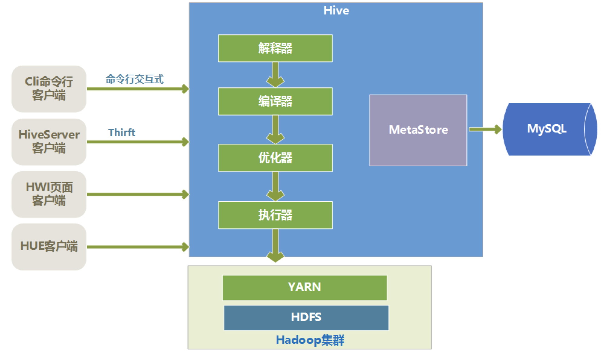

Hive是基于Hadoop的一个数据仓库工具, 可以将结构化的数据文件映射为一张数据库表, 并提供简单的SQL查询功能, 可以将SQL语句转换为MapReduce任务进行运行. 其优点是学习成本低, 可以通过类SQL语句快速实现简单的MapReduce统计, 不必开发专门的MapReduce应用, 十分适合数据仓库的统计分析.
Hive介绍

上图是Hive的一个整体架构, Hive的数据是存储在HDFS上的, Hive中的库和表可以看作是对HDFS上数据做的一个映射. 所以Hive必须是运行在一个Hadoop集群上的.
Hive的元数据是一般是存储在MySQL这种关系型数据库上, Hive和MySQL之间通过MetaStore服务交互.
Hive中的执行器, 是将SQL转化为MapReduce程序, 然后将要执行的MapReduce程序放到YARN上以一系列Job的方式去执行.
总体来说Hive有如下一些特点:
容易上手.
通过类SQL来处理大数据, 而避免了写MapReduce程序, 这样使得分析数据更容易.
逻辑表.
数据是存储在HDFS上的, Hive本身并不提供数据的存储功能. 将数据映射成数据库和一张张的表, 库和表的元数据信息一般存在关系型数据库上.
数据存储方面.
能够存储很大的数据集, 对数据完整性, 格式要求并不严格.
数据处理方面.
因为Hive语句最终会生成MapReduce任务去计算, 所以不适用于实时计算查询的场景, 它适用于离线批量处理.
相比一些关系型数据库(如MySQL), Hive还有一些概念:
- 内部表/外部表.
- 分区.
- Array, Map, Struct数据结构.
这些是处于大数据的安全, 灵活, 更快地处理而提出的, 这里暂不做更多的介绍.
安装
系统为Ubuntu, 在安装Hive之前, 确保已经安装好了Hadoop和MySQL.
1 | mysql -V |
下载合适的Hive版本, 下载地址. 这里下载的是2.3.7版.
下载后解压, 移到/usr/local/hive/.
修改环境配置.bashrc:
1 | # hive |
修改Hive配置:
1 | $ cd $HIVE_CONF_DIR |
1 | <property> |
因为在hive-site.xml默认有以上配置, 所以在Hadoop集群中进行创建.
1 | $ hadoop fs -mkdir -p /user/hive/warehouse |
将配置中的${system:java.io.tmpdir}替换为/usr/local/hive/tmp/, 例如:
1 | <property> |
并创建对应文件夹:
1 | $ cd $HIVE_HOME |
将配置文件中${system:user.name}都替换为root, 例如:
1 | <property> |
修改数据库相关配置:
1 | <property> |
添加MySQL驱动包, 下载地址, 解压后移动到Hive里面.
1 | $ cp mysql-connector-java-5.1.49.jar $HIVE_HOME/lib |
新建hive-env.sh文件并修改:
1 | $ cd $HIVE_CONF_DIR |
1 | # Set HADOOP_HOME to point to a specific hadoop install directory |
初始化MySQL数据库:
1 | $ cd $HIVE_HOME/bin |
若成功, 则会在MySQL中生成Hive元数据库; 若失败, 则检查配置是否正确.
启动Hive:
1 | $ cd $HIVE_HOME/bin |
进行简单测试:
1 | hive> show functions; |
使用
数据库操作.
1
2
3
4
5
6
7
8
9
10
11
12
13
14
15
16
17
18
19
20
21创建数据库
create database db_name;
标准方式
create database if not exists db_name;
指定路径(hdfs)
create database if not exists db_name location 'hdfs_path/db_name.db';
查看数据库
show databases;
模糊查找, 使用*和.
show databases like 'abc*';
使用数据库
use db_name;
查看数据库字段格式
desc database db_name;
desc database extended db_name;
删除数据库
drop database db_name;数据表操作.
1
2
3
4
5
6
7
8
9
10
11
12
13
14
15
16
17
18
19
20
21
22
23
24
25
26
27
28普通创建表
create table IF NOT EXISTS
db_name.table_name(
id string,
user string)
COMMENT 'abc'
ROW FORMAT DELIMITED FIELDS TERMINATED BY ','
STORED AS TEXTFILE;
子查询方式创建表
create table IF NOT EXISTS db_name.table_name_0
AS select * from table_name_1;
like方式创建表
create table db_name.table_name_0 like table_name_1;
清空表的内容，保留表的结构
truncate table table_name;
删除表
drop table if exists table_name;
插入数据
insert into table_name
values
(..., ..., ...),
...
(..., ..., ...);加载数据.
1
2
3
4
5加载本地文件到hive表
load data local inpath 'path/file' into table db_name.table_name;
加载hdfs文件到hive中, overwrite表示覆盖原数据
load data inpath 'path/file' overwrite into table db_name.table_name;获取数据.
1
2
3
4
5
6
7
8
9
10
11
12
13获取数据到本地
insert overwrite local directory 'path'
ROW FORMAT DELIMITED FIELDS TERMINATED BY ','
select * from db_name.table_name;
在终端使用重定向到本地
hive -e "select * from db_name.table_name;" > 'path/file'
获取数据到hdfs
insert overwrite directory 'hdfs_path' select * from db_name.table_name;
若发现获取的数据中分隔符为hive默认分隔符\x01, 可替换
sed 's/\x01/,/g' file > new_file